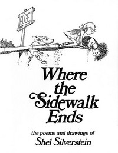

Hello World! This is my first webpage!
There is a place where the sidewalk ends And before the street begins, And there the grass grows soft and white, And there the sun burns crimson bright, And there the moon-bird rests from his flight To cool in the peppermint wind. Let us leave this place where the smoke blows black And the dark street winds and bends. Past the pits where the asphalt flowers grow We shall walk with a walk that is measured and slow, And watch where the chalk-white arrows go To the place where the sidewalk ends. Yes we'll walk with a walk that is measured and slow, And we'll go where the chalk-white arrows go, For the children, they mark, and the children, they know The place where the sidewalk ends.